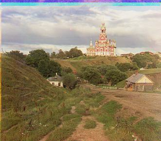
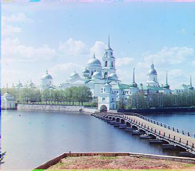
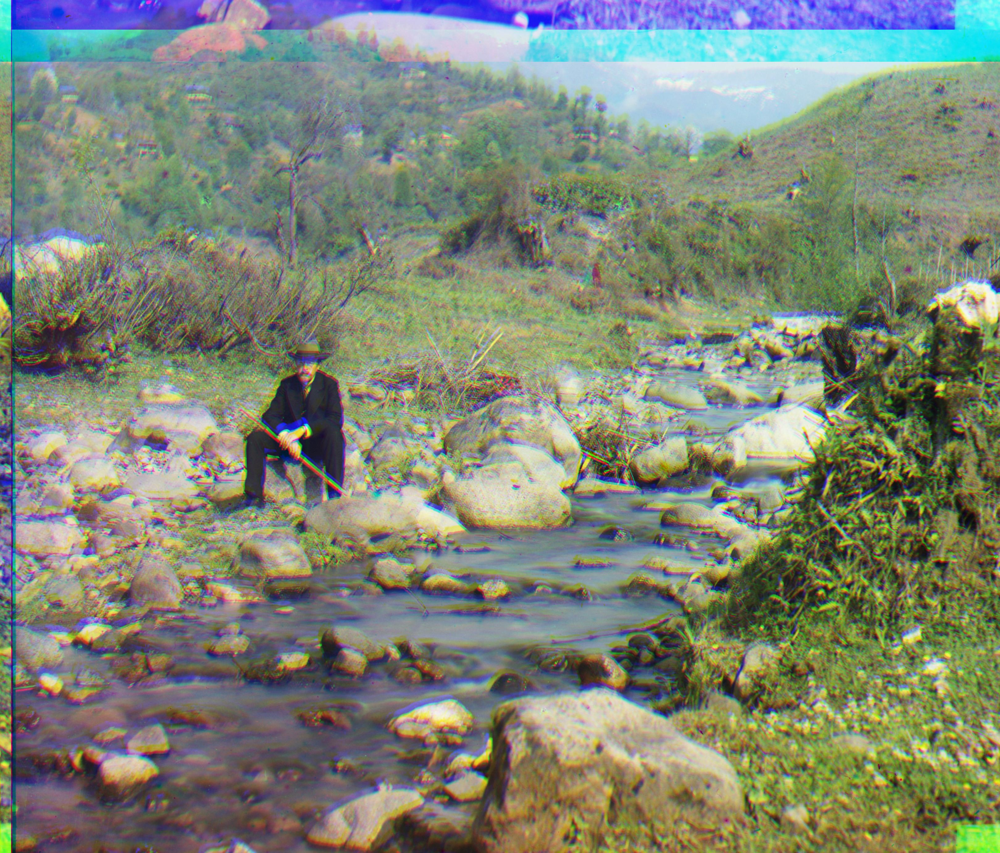

Here are the resulting aligned and colorized images. In my code, I use a pyramid of only one layer, scaled down 4 times to improve runtime and reduce overhead, since the use of multiple layers reduced the speedup of phase cross correlation





